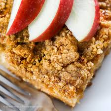

Apple Coffee Cake

Description
Apple work wonders in this easy coffee cake. They add extra sweetness as well as making the cake extra moist and tender. The streusel topping adds a crunchy texture that pairs perfectly with the moist, soft center. It's only made better by serving it with a hot cup of coffee and a good friend.
Ingredients
Cake
- 1 cup all-pupose flour
- 3/4 teaspoon ground cinamon
- 1/2 teaspoon baking soda
- 1/4 teaspoon salt
- 3/4 cup brown sugar
- 1/4 cup unsalted butter, softened
- 1 large egg
- 1/4 cup sour cream
- 1/4 cup vanilla yogurt
- 1 teaspoon vanilla extract
- 2 cup diced Apple
Topping
- 1/4 cup brown sugar
- 1/4 cup all-pupose flour
- 1/4 cup unsalted butter, cut into small pieces
- 1/2 teaspoon ground cinamon
Steps
- Preheat the oven to 350 degrees F (175 degrees C). Grease and generously flour an 8-inch square baking dish.
- Make the cake: Stir flour, cinnamon, baking soda, and salt together in a bowl.
- Beat brown sugar and butter with an electric mixer in a large bowl until light, fluffy, and noticeably lighter in color. Mix in egg, then mix in sour cream, yogurt, and vanilla until well incorporated. Gradually mix in flour mixture, then fold in apples. Pour batter into the prepared baking dish.
- Make the topping: Mix brown sugar, flour, butter, and cinnamon together in a bowl with a fork until crumbly. Sprinkle over batter.
- Bake in the preheated oven until a toothpick inserted into the center comes out clean, 35 to 40 minutes. Remove from the oven and cool on a wire rack.